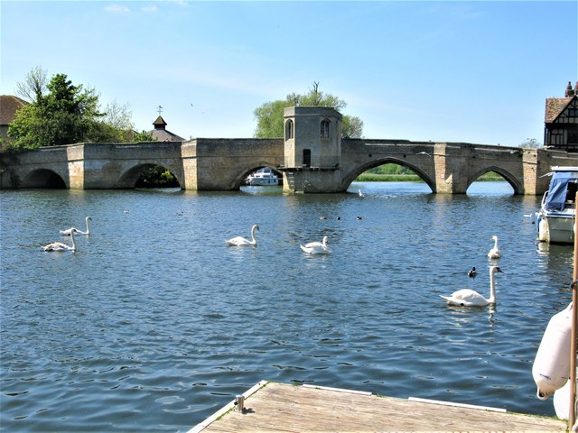

St. Ives
The Old Riverport
Presentación
Lugares de interés
Enlaces
¡Conoce
St. Ives
!
Situada en el Condado de
Cambridgeshire
, esta encantadora ciudad es conocida por su rica historia, sus festivales culturales y su impresionante entorno natural.
